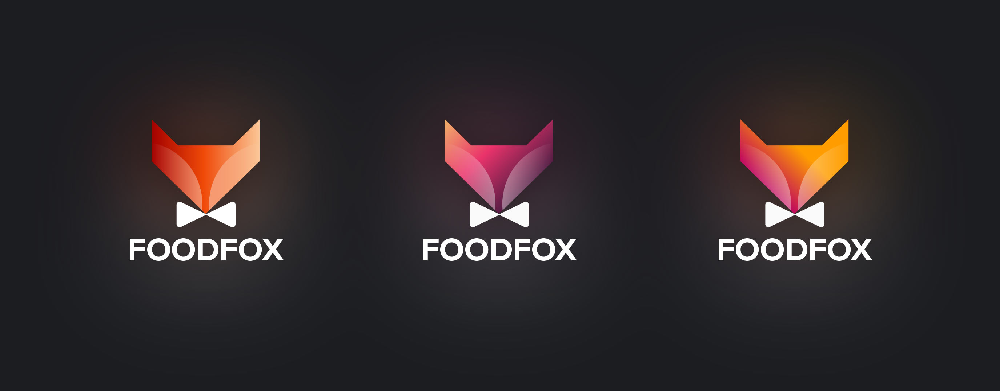
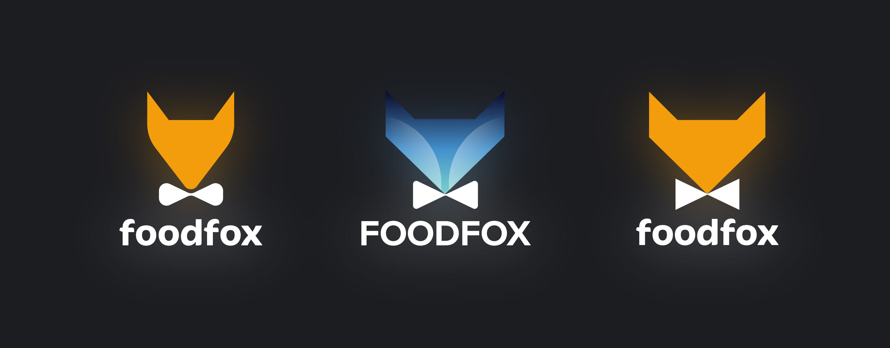

The customer wanted to keep the orange color, and I suggested a minimalist symbol - a fox in a bowtie. The sign turned out to be simple, emotional and confident


As a result, we settled upon a low-key and neat version.
And now this fox is all around Moscow :-)